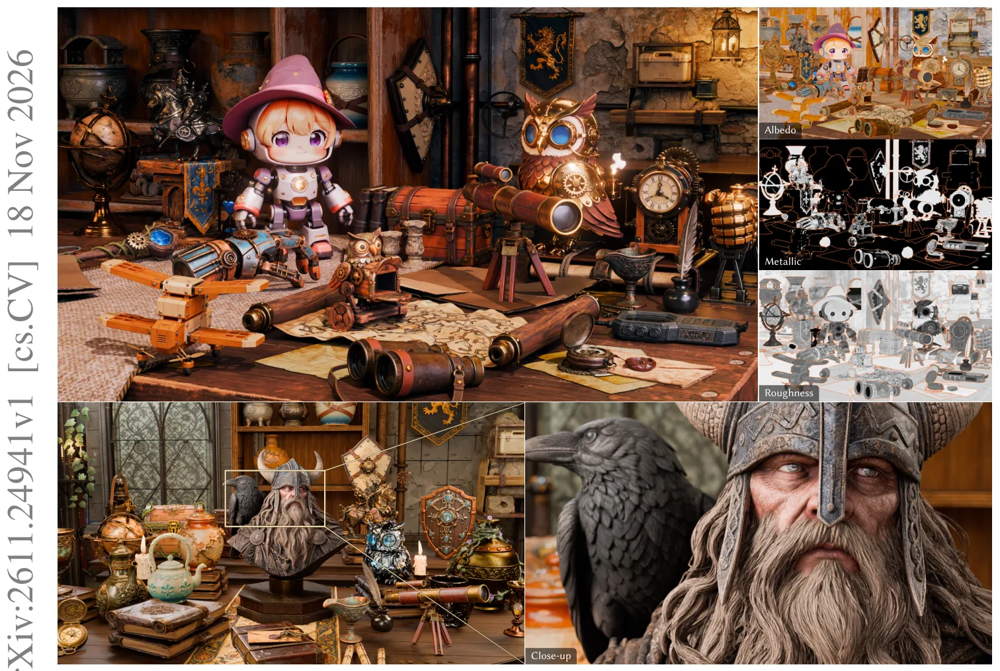
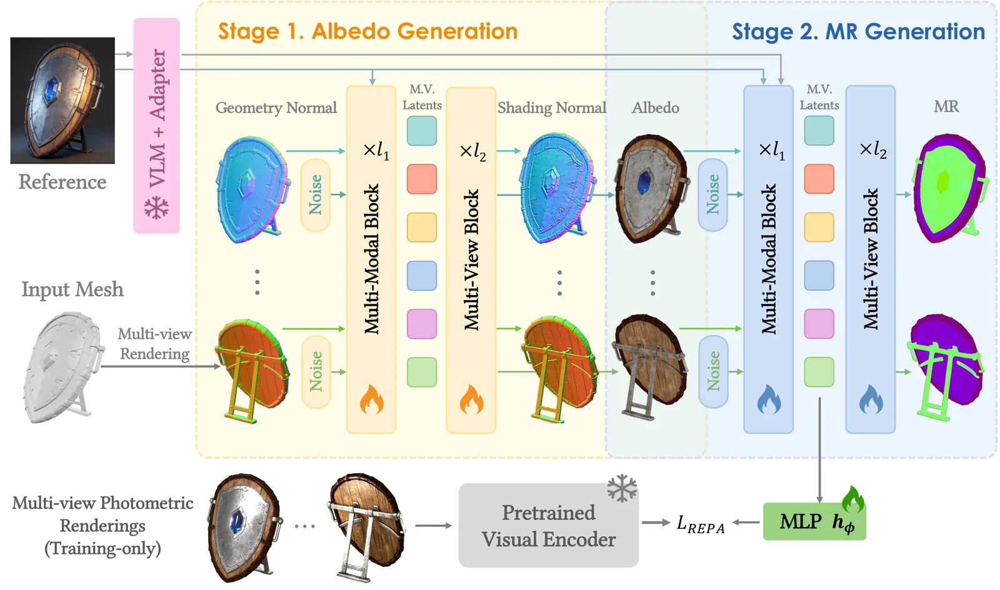
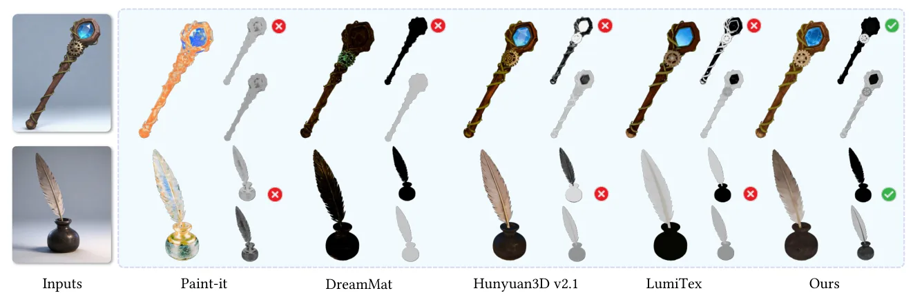
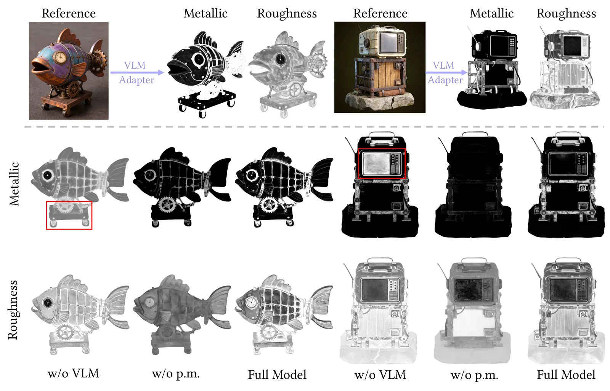

O Problema da Ambiguidade em Texturas PBR
Geração de texturas para renderização baseada em física (PBR) a partir de uma única imagem de referência é um problema intrinsecamente ambíguo. Na imagem observada, a identidade do material, a reflectância da superfície e a iluminação estão entrelaçadas. Uma região brilhante pode ser metal polido, um revestimento gloss, ou apenas uma iluminação forte. Métodos anteriores focavam em corresponder a aparência visual, mas falhavam em inferir atributos intrínsecos como metalicidade e rugosidade com precisão.
Texturas PBR separam a aparência visível das propriedades intrínsecas do material. Enquanto o albedo define a cor base, a metalicidade e a rugosidade determinam como a superfície responde a diferentes condições de luz. Isso permite que ativos 3D sejam reiluminados de forma plausível em jogos e filmes. No entanto, gerar esses mapas de forma automática é difícil porque as propriedades de metalicidade e rugosidade são abstratas e não são diretamente observáveis como pixels de cor.
Abordagens anteriores de inverse rendering dependiam de setups de captura controlados, como flash co-localizado, para expor pistas físicas como reflexos especulares. Essas técnicas não generalizam bem para imagens 'in-the-wild'. Métodos generativos recentes usam modelos de difusão para sintetizar texturas multi-view, melhorando a geração de albedo, mas ainda produzem mapas metálicos e de rugosidade imprecisos, muitas vezes atribuindo valores metálicos incorretos ou gerando rugosidade excessivamente conservadora.

A Abordagem Cascateada do UltraTex
UltraTex propõe um framework cascateado de difusão multi-view que alinha conhecimento físico ao processo generativo. O pipeline opera em duas etapas. Na primeira, o modelo prediz conjuntamente mapas de albedo e normais de shading no espaço global. Na segunda, ele prediz mapas de metalicidade e rugosidade (MR), condicionados no albedo gerado, na imagem de referência e em priores semânticos de material.
Essa separação em estágios é crucial. A primeira etapa foca na reconstrução geométrica e de cor base, enquanto a segunda etapa lida com as propriedades físicas abstratas. Ao condicionar a segunda etapa no albedo já gerado, o modelo tem acesso a uma representação mais limpa da cor base, o que ajuda a isolar as variações de reflexo e rugosidade. Isso evita que o modelo confunda padrões de cor com propriedades de superfície.
O modelo é construído sobre um backbone de difusão de imagem, mas estendido para lidar com múltiplas vistas. As texturas são representadas como canais de uma imagem RGB para compatibilidade com os modelos de difusão existentes. O treinamento é feito separadamente para cada etapa, permitindo que o modelo aprenda as complexidades de cada tipo de mapa de textura de forma focada.

Etapa 1: Albedo e Normais no Espaço Global
A primeira etapa gera mapas de albedo ortográficos e normais de shading no espaço global a partir da imagem de referência e das normais geométricas renderizadas. O modelo usa um Two-Step Architecture. Primeiro, um Multi-Modal Transformer (MM-T) funde os tokens de condição (imagem de referência e normais geométricas) com os latentes de vista por vista. Isso integra as informações de aparência e geometria local antes da geração.
Em seguida, um Multi-View Transformer (MV-T) realiza o raciocínio global. Ele descarta os tokens de condição e processa apenas os latentes de todas as N vistas. Isso permite que o modelo capture correlações entre as vistas e garanta coerência 3D. O auto-attention global nessa etapa assegura que as texturas geradas sejam consistentes quando vistas de diferentes ângulos, evitando inconsistências visuais.
Um diferencial importante é a estimativa conjunta de normais de shading no espaço global. Diferente das normais no espaço tangente, que dependem da parametrização UV e podem causar costuras, as normais no espaço global são independentes das UVs. Isso fornece uma supervisão geométrica mais robusta para a geração de albedo, incentivando detalhes de superfície de alta frequência e evitando artefatos comuns em métodos anteriores.
Etapa 2: Semântica de Material com VLMs
A segunda etapa é onde o UltraTex se destaca ao introduzir conhecimento físico explícito. Para prever mapas de metalicidade e rugosidade, o modelo precisa entender não apenas como a imagem parece, mas do que o objeto é feito. Os autores utilizam um adaptador leve guiado por um Modelo de Linguagem e Visão (VLM), especificamente o Qwen3.5-4B. Este VLM é congelado e usado apenas para extrair características visuais de camadas intermediárias.
O adaptador transforma essas características em tokens de material intrínseco 1D. Esses tokens são injetados nos blocos de denoising do modelo de difusão. Eles atuam como âncoras de conhecimento semântico em nível de parte. Por exemplo, o modelo pode aprender que uma roda é feita de borracha (alta rugosidade, não metálica) e um para-choque é feito de metal (baixa rugosidade, metálico), mesmo que a aparência visual seja ambígua.
Essa injeção de semântica é crucial porque mapas metálicos e de rugosidade são parâmetros abstratos. O modelo não pode simplesmente aprender por correspondência de pixels. Ele precisa de um prior que lhe diga quais regiões devem ser metálicas e quais não. O adaptador VLM fornece essa informação contextual, permitindo que o modelo tome decisões fisicamente plausíveis sobre as propriedades do material.

Alinhamento Fotométrico para Interação Luz-Material
Além da semântica, o UltraTex utiliza alinhamento de representação fotométrica para guiar o aprendizado da interação entre material e luz. Como os mapas MR são abstratos, a supervisão direta é difícil. Em vez disso, o modelo é treinado para alinhar suas características intermediárias de difusão com renderizações de material sob iluminação controlada.
Isso torna as variações de metalicidade e rugosidade observáveis através da intensidade dos reflexos, da nitidez especular e do contraste de reflectância local. O modelo aprende a prever MR de forma a produzir respostas fotométricas corretas, mesmo sem supervisão explícita da iluminação. Isso permite uma previsão de material de alta fidelidade, baseada em como a luz realmente interage com a superfície.
O objetivo é que o modelo internalize as leis da física de renderização. Se ele gera um mapa metálico incorreto, a renderização fotométrica resultante será fisicamente inconsistente. Ao alinhar as representações internas com essas renderizações de controle, o modelo é forçado a aprender relações causais profundas entre a textura e a aparência física.
Resultados e Avaliação
O UltraTex foi avaliado em um dataset de 130K objetos do Objaverse-XL e TexVerse, renderizados em 32 vistas com iluminação aleatória. As métricas quantitativas mostram que o UltraTex supera métodos open-source como Paint-it, DreamMat e LumiTex, bem como métodos comerciais como Hyper3D e TripoAI. Em particular, ele obtém melhores resultados em CLIP-I (similaridade semântica) e métricas de erro especular (MSEM/MSER).
Estudos de usuário também indicam preferência significativa. Em comparações pareadas, o UltraTex foi preferido em 89% dos casos contra Hyper3D v2.0 e em 83% contra Hunyuan3D v3.1. Os avaliadores destacaram a qualidade da renderização, a precisão do albedo e, principalmente, a precisão dos materiais metálicos e de rugosidade.
A geração de texturas de alta resolução (4K UV) é feita através de upscaling super-resolução e inpainting de regiões não observadas. O pipeline é eficiente, treinado em 32 GPUs A100 por cerca de 2 dias. A capacidade de remover iluminação gravada (baked-in lighting) é um ponto forte, permitindo que os ativos gerados sejam reiluminados em ambientes virtuais sem artefatos visuais.

Limitações e Trabalho Futuro
Apesar dos resultados promissores, o UltraTex tem limitações claras. Ele não lida bem com materiais complexos que envolvem transporte de luz não padrão, como transparências, translucidez, caustics ou efeitos BRDF avançados. O modelo tende a aproximar gemstones usando padrões de albedo e baixa rugosidade, mas não pode representar a luz passando através do material.
Essa limitação decorre do conjunto de dados de treinamento, que se concentra em albedo, metalicidade e rugosidade. A ausência de canais como especular, coat, transmissão e subsurface scattering restringe o que o modelo pode aprender. O futuro do trabalho depende da disponibilidade de datasets em larga escala com anotações mais ricas.
Outra direção é estender o framework para modelos de material mais expressivos, mantendo a robustez e escalabilidade da geração PBR multi-view. Enquanto isso, o UltraTex representa um avanço significativo para a geração de texturas físicas realistas a partir de imagens únicas, fechando a lacuna entre aparência visual e propriedade material.
O que fica
- UltraTex usa um pipeline em duas etapas: primeiro gera albedo e normais, depois estima mapas metálicos e de rugosidade.
- Um adaptador baseado em VLM fornece semântica de material para guiar a geração de propriedades físicas abstratas.
- Alinhamento fotométrico permite que o modelo aprenda como a luz interage com o material sem supervisão explícita de iluminação.
- O método supera abordagens comerciais em precisão material e plausibilidade física, mas falha em materiais não padrão como transparências.
Paper original: UltraTex: Aligning Physical Knowledge for High-Fidelity PBR Texture Generation
Comentários
Nenhum comentário ainda. Seja o primeiro.